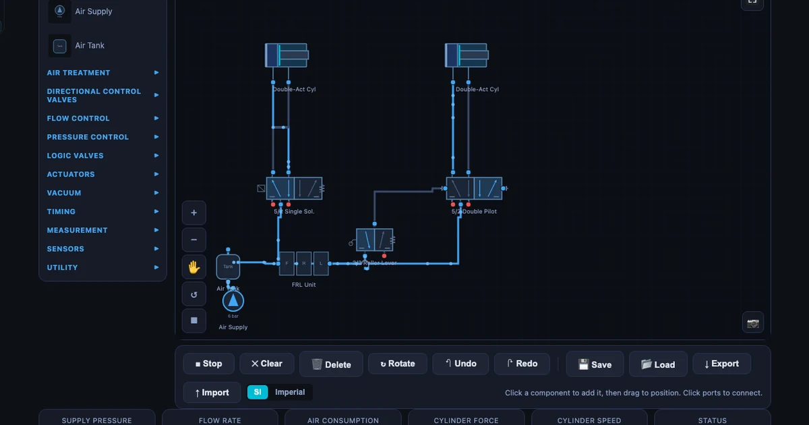
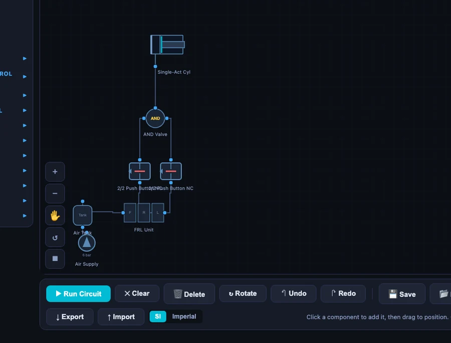

Building Pneumatic Circuits Without Compressed Air: My Simulator-First Approach

- A simulator-first approach has students build and animate an ISO 1219 pneumatic circuit on screen before touching a real rig, so physical lab time becomes verification instead of orientation — cutting real-rig setup from roughly 25 minutes to about 8.
- The simulator covers the full teaching progression with 41 components and 11 preset circuits, from direct control through AND-logic two-hand safety, cascade sequencing, and vacuum pick-and-place — no compressor or installed software required.
- Core rules it teaches: always use meter-out for smooth cylinder speed control, and cylinder force is F = P × A (6 bar on a 50 mm bore gives ≈ 11,780 N).
The first time I set a group of students loose on a real pneumatic training rig, I made a mistake I've never repeated. I assumed that because they'd seen the ISO 1219 symbols in lectures, they could translate that knowledge to physical connections. What actually happened: fifteen minutes of staring at the rig, three mis-routed hoses, and one cylinder that fired unexpectedly when a student was still adjusting the flow control valve. Nobody was hurt, but the hiss of the exhaust port made everyone jump — and we hadn't even reached the circuit objective for the session.
The simulator-first approach fixes that entirely. Students build and animate the circuit on screen before they touch a fitting. When they finally arrive at the real rig, they're not discovering the circuit — they're confirming it. The mental model is already in place; the physical session becomes verification, not confusion.
The pneumatic circuit simulator gives you 41 components across 11 categories and 11 ready-made circuit presets, all drawn with correct ISO 1219-1:2012 symbols and animated blue air-flow particles that show exactly where pressure is moving at every moment.
Why Pneumatic Labs Are Hard to Teach Well
Pneumatic labs have three friction points that no amount of good teaching fully overcomes without preparation.
First, time. A shared compressor and four to six training rigs means the lab session is finite and often short. Students who arrive without a clear mental picture of the circuit spend the first half of the session just orienting themselves — reading the symbol sheet, identifying the valves, figuring out which port is which. By the time they've wired the basic direct control circuit, the hour is nearly gone and the actual objective — speed control, sequencing, safety logic — hasn't been touched.
Second, safety. Compressed air at 6 bar carries enough stored energy to cause serious injury if a fitting pops loose or a cylinder fires unexpectedly. This means demonstrations need to be carefully staged, students need to be briefed before every new circuit type, and instructors spend a significant portion of lab time on safety management rather than teaching pneumatics. That's not avoidable in a real lab — but it means the teaching window is smaller than it appears on the timetable.
Third, the gap between symbol and reality. A 5/2 way valve on a schematic looks nothing like the grey aluminium block with five push-in fittings sitting on the rig. Students who haven't consciously mapped one to the other will waste time — or make dangerous connections — trying to reconcile the diagram and the hardware simultaneously. The simulator closes that gap before it becomes a lab-time problem.
Forty-One Components, Eleven Ready-Made Circuits
The component library covers everything a vocational pneumatics curriculum needs. You'll find single-acting and double-acting cylinders, 3/2 and 5/2 directional control valves in push-button, roller-lever, solenoid, and pilot-operated variants, one-way and two-way flow control valves, FRL units (Filter-Regulator-Lubricator), time-delay valves, dual-pressure AND valves, shuttle OR valves, and vacuum generators with suction cups. The eleven preset circuits span the full teaching progression:
- Direct Control (single-acting cylinder, 3/2 push-button valve)
- Indirect Control (pilot-operated 5/2 valve)
- Speed Control — meter-out
- Time Delay
- AND Logic (two-hand safety)
- OR Logic
- Sequential A+B+
- Sequential A+B+B−A− (four-step)
- Cascade A+B+B−A−
- Oscillating Circuit
- Vacuum Pick-and-Place
Each preset loads the correct components, routes the connections, and includes a written description of the circuit logic. The animated particles follow the live air path — when a valve switches, the particles reroute in real time. You can watch the pilot signal travel from a limit switch to the main 5/2 valve and see exactly when the cylinder starts moving in response.
Start Simple: Direct Control and Speed Control
I always start a pneumatics module with the direct control circuit. One 3/2 push-button valve, one single-acting spring-return cylinder, one FRL unit. Load the preset, press Run, and press the button. The cylinder extends; release, it retracts on the spring. That's it. But within that simple circuit, students learn three things they'll carry through every more complex circuit: air flows from supply through the valve to the actuator; the valve controls direction; and the exhaust always needs somewhere to go. Port 3 on the 3/2 valve is the exhaust — not connected to anything, just vented to atmosphere through the silencer. Many students try to cap an exhaust port on their first real-rig attempt. Seeing it animated beforehand stops that.
Speed control introduces the one-way flow control valve, and here the distinction between meter-in and meter-out matters enormously. The simulator defaults to meter-out — and with good reason.
With meter-in, you restrict the supply air entering the cylinder. This sounds logical but creates a problem: air is compressible. You throttle the inlet, pressure builds behind the restricted valve, then releases in a burst — the cylinder lunges forward rather than moving smoothly. With overrunning loads or uneven friction, the motion becomes unpredictable.
Meter-out places the flow control valve on the exhaust side of the cylinder port. Now you're restricting the air leaving the cylinder. The trapped air on the exhaust side acts as a cushion, providing smooth, load-independent speed control regardless of supply pressure fluctuations. For pneumatic cylinders, meter-out is almost always the right choice — and seeing the two variants side by side in the simulator makes the reason concrete rather than abstract.
The cylinder force equation is also worth covering here, while the circuit is simple enough that students aren't juggling too many concepts at once:
\[F = P \times A\]
At 6 bar working pressure with a 50 mm bore cylinder:
\[F = 6 \times \dfrac{\pi \times 50^2}{4} = 6 \times 1963 \approx 11{,}780 \text{ N}\]
That's nearly 12 kN from a cylinder you could hold in one hand. It's the number that makes students understand why mis-routed hoses on a live rig aren't a trivial problem.
Air consumption per cycle follows the volumetric expansion equation:
\[Q = A \times L \times (P_{\text{gauge}} + 1) \times n\]
where A is piston area, L is stroke length, Pgauge is gauge pressure in bar, and n is the number of cycles per minute. The (Pgauge + 1) term converts gauge pressure to absolute — at 6 bar gauge, air expands by a factor of 7 when exhausted to atmosphere. This figure feeds directly into compressor sizing for production systems, and it's a useful demonstration that pneumatics isn't "free" energy: every cycle consumes compressed air that the compressor had to produce.
Safety Circuits: Teaching the AND Logic Two-Hand Control
The AND logic two-hand safety circuit is one of the most practically important circuits in industrial pneumatics, and it's also one of the most satisfying to teach because the safety rationale is immediately obvious.

The circuit uses a dual-pressure valve (sometimes called a two-pressure valve). It has two pilot inputs and one output. The output only opens when both inputs are pressurised at the same time. Two separate 3/2 push-button valves — one for each hand — feed the two inputs. Press only the left button: nothing happens. Press only the right button: nothing happens. Press both simultaneously: the dual-pressure valve opens, the main 5/2 valve shifts, and the cylinder extends.
Release either button at any point and the pilot signal is cut immediately. The 5/2 valve springs back to neutral and the cylinder retracts. You cannot hold one button and use your free hand to reach into the work zone — the circuit prevents it mechanically, not just procedurally.
In a real industrial press, this circuit is a legal requirement in most jurisdictions, not an optional safety measure. Loading the preset and walking through the dual-pressure valve logic takes about five minutes. The concept then connects directly to what students will see on automated presses, stamping machines, and injection moulding equipment in their industrial placements — machinery that operates under exactly this logic, at scale.
The time-delay variant is worth a mention here too. Pneumatic time-delay valves work on a simple principle: air fills a reservoir through a throttle, and when pressure in the reservoir reaches the cracking pressure of the pilot, the valve switches. The time is proportional to the throttle resistance and the reservoir volume:
\[t \propto R \times C \quad \text{(throttle resistance × reservoir capacity)}\]
This is the pneumatic equivalent of an RC time constant — a connection that lands well with students who've covered basic electronics. Adjusting the throttle on the time-delay preset and watching the delay change in the animation makes the relationship tangible.
Sequencing and Cascade: Where Students Really Learn
Direct control is an introduction. Speed control builds good practice. The AND logic circuit connects to the real world. But sequencing is where students genuinely start to think like pneumatic system designers.
The A+B+ sequential circuit uses two double-acting cylinders. The sequence runs: Cylinder A extends (A+); when A reaches full extension, a roller-lever limit switch fires a pilot signal to extend Cylinder B (B+). Load the preset, press Run, and that moment when the sequence fires for the first time — when Cylinder A completes its stroke and Cylinder B immediately starts moving in response — is always the moment I see students lean forward. The circuit is doing something purposeful. It's not just one cylinder going back and forth; it's a coordinated machine action.
The limit switch is the key. The roller-lever valve sits at the end of Cylinder A's stroke. When the cylinder rod contacts the roller, it mechanically shifts the 3/2 valve, pressurising the pilot port on Cylinder B's 5/2 valve. The timing isn't electronic; it's purely pneumatic and mechanical. The simulator shows this beautifully — the blue particles following the pilot line from the limit switch to the main valve, and then the burst of flow into Cylinder B's cap end.
But the four-step sequence A+B+B−A− exposes a problem that simple sequencing can't solve: signal conflicts. Consider the retract of Cylinder B (B−). The limit switch at the extended position of A is still actuated — A is still fully extended. The pilot signal from that switch is simultaneously needed for A+ (first step) and is active during B− (third step). If you wire the circuit without accounting for this, the valve gets contradictory signals and the sequence stalls or misbehaves.
This is where cascade sequencing earns its place in the curriculum.
Cascade divides the sequence into two groups. Group I handles A+ and B+; Group II handles B− and A−. A group-switching valve (a 5/2 pilot valve) directs the supply line to either Group I or Group II control signals — never both at once. At the start, Group I is active: A+ fires; B+ fires; the end-of-B+ limit switch both triggers the group switch and deactivates Group I. Now Group II is active: B− fires; A− fires; the end-of-A− limit switch resets back to Group I. No signal is ever active in two groups simultaneously, so there are no conflicts.
The cascade preset in the simulator shows the group-switching valve clearly, with separate colour coding (or particle routing) for Group I and Group II supply lines. Students can step through the sequence event by event and identify which group is active at each stage. This visual walk-through reduces the time needed to explain cascade on the real rig from 30 minutes to about 5 — the concept is already understood before they touch a hose.
How I Run the Simulator Lab
The workflow I've settled on has four stages, and it fits into a standard 2-hour vocational session without feeling rushed.
Pre-lab warm-up (15 minutes, self-paced before the session). Students open the simulator on their own device and load the preset circuit for the day's lab. They identify each component, trace the air path, and answer three questions on a worksheet: What does the FRL unit do? What is the purpose of the exhaust port? What would happen if the meter-out flow control valve were removed? This takes about 15 minutes and can be done at home the night before or in the first 15 minutes of a shared computer session.
Simulator session (20 minutes, instructor-led). At the start of lab, I load the same circuit on the projector and walk through it with the class. I change a parameter — move the flow control from meter-out to meter-in, lower the time delay, set a sequence valve at the wrong pressure — and ask students to predict what will change before I run it. This discussion takes about 10 minutes, then I run the circuit and we compare predictions to results. Students who've done the pre-lab are already ahead and can answer the prediction questions; those who haven't are motivated to catch up.
Real rig session (60 minutes). By the time students move to the physical rig, they know where every component connects. The setup time drops from roughly 25 minutes (without preparation) to around 8. That's 17 minutes of extra lab time — enough for a second circuit variation or a design challenge. I use those extra minutes for a constraint exercise: "same objective, but you have to achieve it with one fewer valve." There's usually one creative solution in every class.
Assessment (15 minutes). Students sketch the circuit from memory, label every component with its ISO 1219 symbol, and annotate the air path for one specific valve position. This closes the loop between simulation and theory — they've seen it, built it, and now must recall and draw it. The retention on sketching-from-memory assessments improved noticeably after I introduced the simulator-first preparation.
Try It Yourself
All tools below are free — no account, no download.
Key Takeaways
- Simulator-first preparation cuts real-rig setup time by more than half and shifts lab time from orientation to actual engineering practice.
- A 5/2 way valve has 5 ports (1 = supply, 2 = output A, 3 = exhaust A, 4 = output B, 5 = exhaust B) and 2 switching positions — the standard directional control valve for double-acting cylinders.
- Always use meter-out speed control for pneumatic cylinders. Meter-in causes jerky motion because air compressibility allows pressure to build and release suddenly. Meter-out restricts the exhaust for smooth, load-independent control.
- Cylinder force at 6 bar on a 50 mm bore is F = 6 × 1963 ≈ 11,780 N. Air is deceptively powerful — this calculation makes students take pneumatic safety seriously.
- The AND logic two-hand safety circuit uses a dual-pressure valve to enforce simultaneous two-hand operation. Both hands on the controls; no free hand near the moving part. This is a legal machine-guarding requirement in industrial presses, not just good practice.
- Cascade sequencing eliminates signal conflicts in multi-cylinder sequences by dividing steps into groups (Group I: A+B+; Group II: B−A−) with a group-switching valve ensuring only one group is active at any time.
- The 41-component library and 11 circuit presets cover the full TVET pneumatics curriculum from basic direct control through vacuum pick-and-place without requiring installed software or a compressor.
Frequently Asked Questions
What is a 5/2 way valve in pneumatics?
A 5/2 way valve has five ports and two switching positions. Port 1 is the pressure supply; ports 2 and 4 are the two cylinder connections; ports 3 and 5 are the exhaust outlets. In position 1, supply goes to port 2 (cylinder extends); in position 2, supply goes to port 4 (cylinder retracts). The separate exhaust ports allow independent speed control on each stroke using meter-out flow control valves.
What is an FRL unit and why is it mandatory?
An FRL unit combines a Filter, Regulator, and Lubricator into a single assembly placed between the compressor and the circuit. The filter removes moisture and particles that would damage valve seats. The regulator stabilises working pressure — typically 4–6 bar — regardless of compressor fluctuations. The lubricator adds a fine oil mist to reduce wear in cylinder seals and valve spools. Omitting an FRL unit from a real pneumatic installation dramatically shortens component life.
What is the difference between meter-in and meter-out flow control in pneumatics?
Meter-out places the one-way flow control valve on the exhaust side of the cylinder port, restricting outgoing air and providing smooth, load-independent speed control. Meter-in restricts the supply air — this causes jerky, uncontrolled motion because compressed air is compressible: it builds up pressure then releases suddenly. For pneumatic cylinders, meter-out is almost always the correct choice. The simulator defaults to meter-out in its speed-control preset.
How does a pneumatic AND logic circuit work?
An AND logic circuit uses a dual-pressure valve (also called a two-pressure valve or shuttle valve AND variant). The dual-pressure valve has two inputs and one output — it only passes pilot signal when BOTH inputs are pressurised simultaneously. In a two-hand safety circuit, both push buttons must be held at the same time to extend the cylinder. Releasing either button immediately cuts the signal and retracts. This directly prevents single-hand operation on industrial presses.
What is cascade sequencing in pneumatics?
Cascade sequencing is a method for controlling multi-cylinder sequences that eliminates signal conflicts. When a four-step sequence like A+ B+ B− A− is required, simple limit-switch signals can clash — the same signal may be active for both an extend and retract command simultaneously. Cascade divides the sequence into groups (Group I: A+ B+; Group II: B− A−) and uses a group-switching valve to direct power to the correct group, ensuring only one set of signals is active at any time.
Pneumatic systems are everywhere in manufacturing — pick-and-place robots, clamping fixtures, stamping presses, packaging lines. The students who understand cascade sequencing and two-hand safety circuits don't just pass their assessments; they recognise what they're looking at when they walk into a factory. That recognition is worth more than any qualification on paper.
Open the Pneumatic Circuit Simulator, load the Cascade A+B+B−A− preset, and step through the group switching one event at a time. Watch the group-switching valve change state, watch the active supply line shift from Group I to Group II, and trace which limit switch triggers which next step. Do that once and cascade sequencing stops being a procedure to memorise and becomes a logic you understand. That's the difference between learning for the exam and learning for the job.